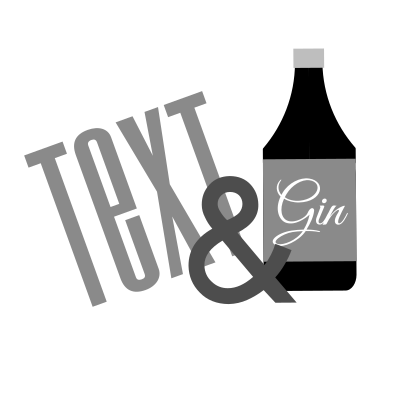
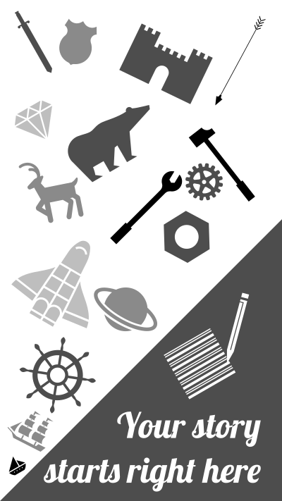

<mat-drawer-container>
    <mat-drawer #drawer mode="side" position="end" opened="true">
        <button mat-raised-button class="loadButton">Load story</button>
        
        
    </mat-drawer>
    <mat-drawer-content>
        <mat-toolbar>
            <div class="title">
                Text-N-Gin
            </div>
            <div class="author">
                © Sebastian Maciejewski, 2019
            </div>
            <!-- <button mat-raised-button (click)="drawer.toggle()">Toggle side menu</button> -->
        </mat-toolbar>
        <app-main-view></app-main-view>
    </mat-drawer-content>
</mat-drawer-container>